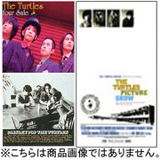
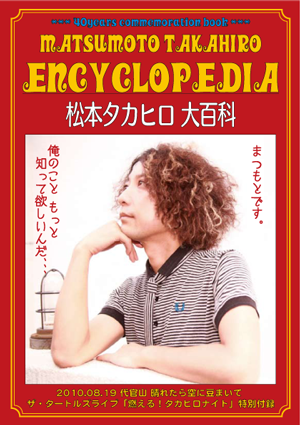

ライブDVD 通信販売はじめました！
株式会社 武蔵野映画社 オンラインショップ
http://shop.musashinoeiga.jp/?pid=81277503
「20th ANNIVERSARY LIVE
20イヤーン！ギラーン！ブドーカーン！！」
■2014年1月26日の20周年記念ワンマンライブの映像を丸っと収録。
■ライブ映像 + 特典映像。
■3,500円(税259円)
2013/7/15 ワンマンライブ ダイジェスト＆ハプニング映像集
動画で蘇る狂熱のワンマンライブ！！ハンカチーフをご準備の上ぜひご覧ください。2013年7月15日 at 代官山 晴れたら空に豆まいて
「いつワンマンやるの？ 今…ちゃうかな。」
Cinematography & Editing by 藤沢 花瑞子
写真ギャラリー大公開！！
ワンマンライブ＠Shibuya Chelsea Hotel 2011/10/25
写真で蘇るあの狂熱のワンマンライブ！！
来れなかったYOUもライブに行った気分で！
こちらをクリック！
BEST盤『タートルマニア』2011.9.23発売！(2011/09/05)
正式な発売日が決定いたしました！
詳しくはこちらから
SONY ORDERMADE FACTORY

「タートルズ BEST盤」収録曲決まりました！(2011/02/14)
タートルズ初となる『BEST盤＆映像集』発売プロジェクト始動！！
詳しくはコチラをご覧ください→ SONY ORDERMADE FACTORY

・最新リマスタリング！
・メンバーが選んだベスト選曲＆曲解説付き。
・「ザ・タートルズシネマ～マッチャンを探せ!」初DVD化!
・入手困難なビデオクリップも収録。
・特典：雑誌に掲載された写真ポストカードセット
・DVD付2枚組(CD+DVD)/ Blu-spec CD仕様
『タートル マニア』
【収録予定曲】
※収録内容・曲順は変更になる可能性もございます。予めご了承ください。
1. I LOVE ROCK'N ROLL
2. ガールフレンド / The Turtles
3. 恋のローラーコースター～ディスコで危機一髪～
4. ボクはロケットマン
5. ボクハヨワクナイ
6. 男の子 女の子
7. Honey Rider
8. COSMIC DOLPHIN!
9. おやすみチャーリー
10.タートル002
11.SWEET CANDY
12.さよなら僕のマーマレード
13.薔薇と蜥蜴
14.WILD HONEY PIE
15.SUNDAY恋をしよう
16.DO THE TURTLE!
17.PLASTIC MAN
18.恋は1000% (新曲)
デジタル版「松本タカヒロ大百科」フリーダウンロード(2011/01/01)

「もっと俺のことを知ってほしい。。。」
っと松本タカヒロが監修・執筆。2010年タートルズワンマンライブ会場限定で配布されたレア大百科のデジタル版フルカラー。タートルズからの太っ腹のお年玉です。
ダウンロードはこちら。
http://www.takahiroid.com/40sbook.pdf
（iPhone,iPadの場合、ダウンロードして「iBookで開く」で本棚に並びます。）
ダイジェスト映像。
タートルマニア事務局：info@turtles-web.com
＊メルマガ「タートルニュース」配信希望の方は上記アドレスまでメールください。
＊郵送でお手紙を送りたい方等は以下へお願いいたします。
〒154-0024 東京都世田谷区三軒茶屋2-11-18 花松ビル401
株式会社ヒツジスタジオ内 タートルマニア事務局 宛